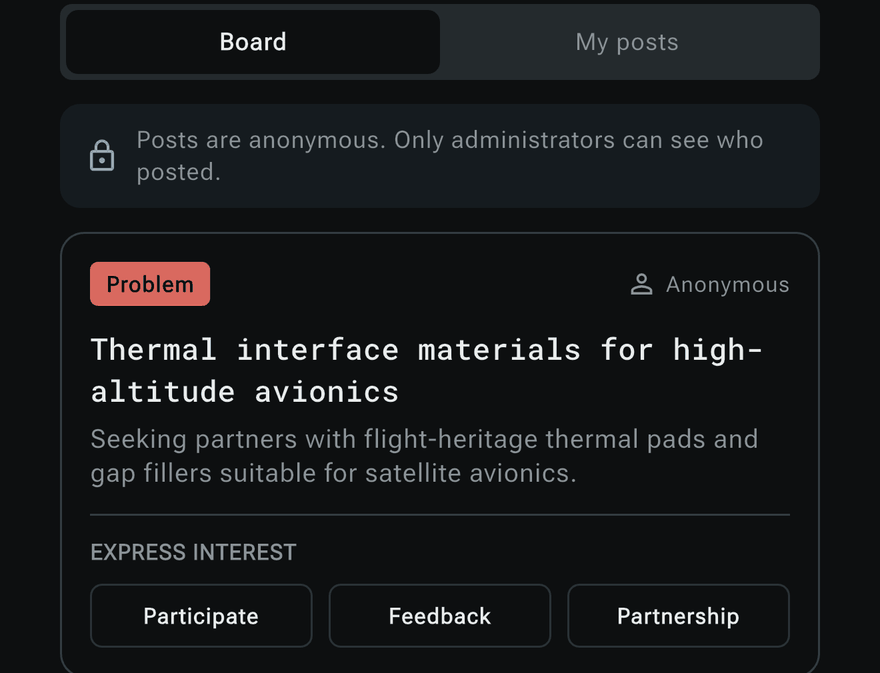
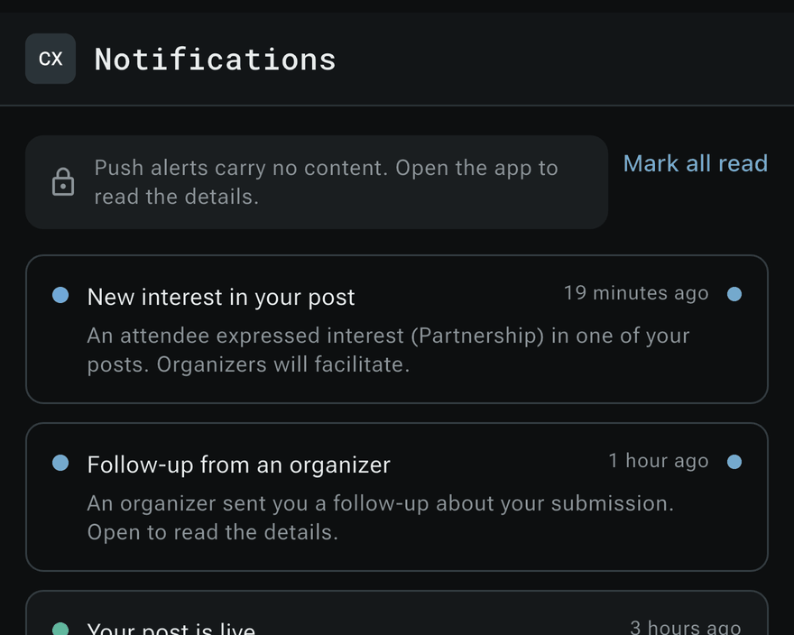
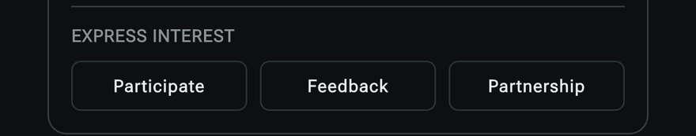

The introduction layer for industrial sourcing
XPND brings the requirement, the capability and the decision into one place, so an organisation can reach a company it has no record of, judge whether it can be trusted, and defend the choice afterwards.


How an introduction is made
Five steps-
01 Posted
Say what you need, without your name on it
The post carries the problem. It does not carry you. ConvergX alone holds the name behind it.
-

02 AnsweredThree ways for the room to answer
Participate, Feedback or Partnership. A member answers the requirement without being told whose it is.
-
03 Read
The two sides never meet each other
One requirement goes in. Member companies answer. Neither side sees the other, and a person at ConvergX is the only thing that joins them.
-
04 Decided
The review ends in a decision
ConvergX asks the questions rather than checking a record. What comes out is a call: introduced, or not taken forward.
-
05 Told
Know when your post moves
The alert carries no content of its own, so nothing about a requirement leaves the platform.
No open registration and no account to create. Access is decided one request at a time.
Two ways in
AccessRequest access
For an organisation with a requirement its own supply base cannot fill. Tell ConvergX what you need solved and which industries you already source from. A person reads it and decides what belongs in front of it.
I have a capabilityApply to join
For a company with a capability already in service. Tell ConvergX what you have built and where it runs. The sector it was built for does not matter, and there is no open registration to work around.